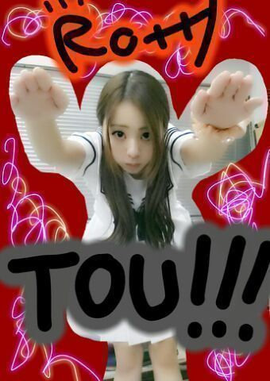
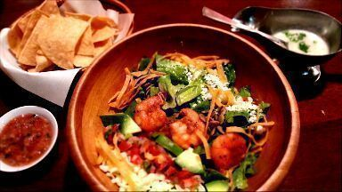

とーーーーーう。
今日も こんばんわ ) )
川村 ろってぃ-だよ〜(ｏ・ω・)ノ

そ-いや 日曜の茨城 牛久での
私達のライブに
乃木坂46のことをすごく
応援してくださっている
スカイラブハリケーンの桜井さんが
来てくださってたとゆう情報を
耳にしました！
色んな方が ライブに来てくださることは
本当に嬉しゅう限りであります.うふん
＿＿＿＿＿＿＿＿＿＿＿＿＿＿＿＿
ぴょん
そしてそして //
今日は乃木のの のラジオ収録に
行って参りましたぁ〜(*´ω｀*)
メンバーは みしゃ ろってぃ- あしゅ。
といったところでしょーか
本当に とっても楽ちかったです )))
今だから言える話...
前回の ろってぃ-ななせが出た回の時ね、
前日 何かの仕事で地方に行ってて
東京に戻ってきて
ほぼ寝ずにラジオ収録に行っちゃって
３人とも 頭半分まわってなかってんね〜
(・ω・｀=)ゞあはは。
11月に放送される分でし
また告知もするから是非とも
聞いてくだちぃ。るんるん
すぐお家に帰る気分ぢゃなかったから
仕事終わって１人で
メキシコ料理のレストランに行ったよ〜 .
じゃん !!

どう？
おいしそうでしょ(*´ `*)
最後にっ、
今日 乃木のの収録の時に
３つハワイのクッキーをもらったの♪
ストロベリー味と ココアとプレーン。
クッキーぱくっ とね(*´ω｀*)
ありがとう.皆 大好きだよ？
おやすみなちゃい. Rotty